Definitions & Introduction
Definitions
The specifications in the following pages describe the warranted performance of the instrument for 23 ±5 °C after a 30-minute warm-up period.
Typical: Expected mean values, not warranted performance.
Min and max: Parameter range that is guaranteed by product design, and/or production tested. Warranted performance specifications include guard-bands to account for the expected statistical performance distribution, measurement uncertainties, and changes in performance due to environmental conditions.
Introduction
The Model 870A is a series of phase-coherent, single, or multi-channel, ultra-fast switching, and ultra-low phase noise signal generators with a frequency range up to 20, 40, and 54 GHz. It is ideally suited for a wide range of applications, where good signal quality, accurate and wide output power ranges, and very stable phase coherence among all channels are required. Excellent phase noise is combined with good spurious, harmonic rejection and optionally leading-edge switching speed of 15 µs.
A high-stability OCXO reference provides excellent frequency accuracy and stability. The generator accepts a wide range of external references including the commonly used 10 and 100 MHz for higher phase synchronization, and a flexible reference choice in the range of 1-250 MHz for those applications with customer- or system-specific reference frequencies. Moreover, the Model 870A features a pair of Berkeley Nucleonics proprietary 3 GHz high-frequency clock ports (one input and one output) that enables excellent phase synchronization among the outputs of multiple Model 870A instruments.
The Model 870A comes in a standard desktop enclosure (single channel) or in a 19-inch 2U (1 up to 4 channels) rack-mountable module form. It can be intuitively controlled by PC based GUI software or custom software / script. Moreover, the instrument offers various communication interfaces like USB, LAN or GPIB. Each interface allows for easy and fast communication using SCPI 1999 command set. Remote control of the instrument can be quickly achieved from any host system. A customer supplied application programming interface (API) or programming examples for MATLAB, LabVIEW, C++ and other commercially available tools make the control implementation very straightforward.
Applications
- R&D low noise signal source
- Production automated testing
- Telecommunication service and maintenance
- Radar signal simulation
- Aerospace & Defense
- Automotive Radar for self-driving technology
Available Options
The following options extend the base Model 870A. See Ordering Information for the full configuration list.
| Option | Description |
|---|---|
| Option FS | Ultra-fast switching speed |
| Option 9K | Frequency range extension to 9 kHz |
| Option LN | Enhanced close in phase noise and frequency stability |
| Option LN+ | Option LN with improved long term frequency stability |
| Option MOD | Analog modulations added |
| Option PE2-20/40 | Mechanical step attenuator down to -120 dBm |
| Option PE2-50 | Mechanical step attenuator down to -110 dBm |
| Option PHS | Phase coherent switching |
| Option VREF | Flexible external reference frequency support in range 1 to 250 MHz |
| Option FLASH | MicroSD card slot for removable SD memory |
| Option GPIB | GPIB interface |
Signal Specifications
| Parameter | Min | Typical | Max | Note |
|---|---|---|---|---|
| Channels | 1 | 4 | ||
| Frequency Ranges | ||||
| 870A-12 | 10 MHz | 12.75 GHz | ||
| 870A-20 | 10 MHz | 20 GHz | ||
| 870A-40 | 10 MHz | 40 GHz | ||
| 870A-50 | 10 MHz | 54 GHz | ||
| 9 kHz | Option 9K | |||
| Resolution | <0.001 Hz | |||
| Phase adjustment range | 0 deg | 360 deg | Individually adjustable per channel | |
| Phase resolution | 0.1 deg | |||
| Deterministic Relative Phase between channels (phase memory) | Option PHS | |||
| Switching Speed | ||||
| CW Mode | 1.5 ms | After SCPI command received | ||
| Sweep / List Mode | 500 µs | |||
| 5 µs | 15 µs | Option FS | ||
| Thermal Drift | 0.015 dB/°C |
See Level Performance for measured maximum output power across frequency.
Frequency Reference
| Parameter | Min | Typical | Max | Note |
|---|---|---|---|---|
| Internal Reference Frequency | 100 MHz · 10 MHz | Option LN/LN+ | ||
| Temperature stability 0 to 50 C | ±100 ppb · ±20 ppb | Option LN/LN+ | ||
| Aging 1st year | 1000 ppb · 30 ppb | 20 ppb | Option LN / Option LN+ | |
| Aging per day | 5 ppb · 0.5 ppb | <0.5 ppb | after 30 days operations · Option LN / Option LN+ | |
| Warm-up time | 5 min | |||
| Output of internal reference | 10 MHz · 100 MHz | REF OUT port, selectable | ||
| Output of High Frequency Clock | 6 GHz | CLK OUT port, high phase synchronous mode | ||
| Output power | -3 dBm | 6 dBm | +3 dBm · +12 dBm | 10 MHz, 6 GHz · 100 MHz |
| Output impedance | 50 Ohms | |||
| Bypass Internal Reference Input | 100 MHz | *Options LN/LN+ are disabled | ||
| Phase lock to External Reference | 1 MHz · 10 MHz | Integer MHz | 250 MHz | REF IN port, Option VREF · *Options LN/LN+ are disabled |
| High Frequency Clock Input (Bypass internal reference) | 6 GHz | CLK IN port, high phase synchronous mode | ||
| Reference input level | ||||
| 10 MHz or 1-250 MHz or 5 GHz | -5 dBm | 0 dBm | +10 dBm | |
| 100 MHz | +5 dBm | +13 dBm | ||
| Lock Range | ||||
| 10 MHz or 1-250 MHz | ±1.5 ppm | |||
| Bypass 100 MHz | 100 ppm | |||
| Reference Input Impedance | 50 Ohms |
Absolute Phase Noise
Absolute SSB Phase noise dBc/Hz
Specified values in plain text, typical values in brackets. CW, level = 10 dBm or maximum available output power, whichever is lower.
| Frequency \ Offset | 10 Hz | 100 Hz | 1 kHz | 20 kHz | 100 kHz | 1 MHz | 10 MHz |
|---|---|---|---|---|---|---|---|
| 100 MHz | -100 (-105) | -130 (-135) | -144 (-149) | -150 (-155) | -156 (-161) | -156 (-161) | -156 (-161) |
| 1 GHz | -80 (-85) | -110 (-115) | -132 (-137) | -145 (-150) | -148 (-153) | -148 (-153) | -155 (-160) |
| 2 GHz | -74 (-79) | -104 (-109) | -126 (-131) | -139 (-141) | -142 (-147) | -142 (-147) | -149 (-154) |
| 3 GHz | -70 (-75) | -100 (-105) | -122 (-127) | -135 (-140) | -138 (-143) | -138 (-143) | -145 (-150) |
| 6 GHz | -64 (-69) | -94 (-99) | -116 (-121) | -129 (-134) | -132 (-137) | -132 (-137) | -139 (-144) |
| 10 GHz | -60 (-65) | -90 (-95) | -117 (-122) | -126 (-131) | -128 (-133) | -126 (-131) | -135 (-140) |
| 20 GHz | -54 (-59) | -84 (-89) | -111 (-116) | -120 (-125) | -122 (-127) | -120 (-125) | -129 (-134) |
| 40 GHz | -48 (-53) | -78 (-83) | -115 (-110) | -114 (-119) | -116 (-121) | -114 (-119) | -123 (-128) |
| 54 GHz | -45 (-50) | -75 (-80) | -100 (-105) | -110 (-115) | -112 (-117) | -112 (-117) | -120 (-125) |
Absolute SSB Phase noise with LN/LN+ option dBc/Hz
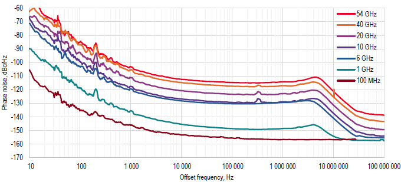
Specified values in plain text, typical values in brackets. CW, level = +10 dBm or maximum available output power, whichever is lower.
| Frequency \ Offset | 10 Hz | 100 Hz | 1 kHz | 20 kHz | 100 kHz | 1 MHz | 10 MHz |
|---|---|---|---|---|---|---|---|
| 100 MHz | -116 (-121) | -132 (-137) | -144 (-149) | -150 (-155) | -156 (-161) | -156 (-161) | -156 (-161) |
| 1 GHz | -100 (-105) | -112 (-117) | -132 (-137) | -145 (-150) | -148 (-153) | -148 (-153) | -155 (-160) |
| 2 GHz | -94 (-99) | -106 (-111) | -126 (-131) | -139 (-141) | -142 (-147) | -142 (-147) | -149 (-154) |
| 3 GHz | -90 (-95) | -102 (-107) | -122 (-127) | -135 (-140) | -138 (-143) | -138 (-143) | -145 (-150) |
| 4 GHz | -88 (-93) | -100 (-105) | -120 (-125) | -133 (-135) | -136 (-141) | -136 (-141) | -143 (-148) |
| 6 GHz | -84 (-89) | -96 (-101) | -116 (-121) | -129 (-134) | -132 (-137) | -132 (-137) | -139 (-144) |
| 10 GHz | -80 (-85) | -91 (-96) | -117 (-122) | -126 (-131) | -128 (-133) | -126 (-131) | -135 (-140) |
| 20 GHz | -74 (-79) | -85 (-90) | -111 (-116) | -120 (-125) | -122 (-127) | -120 (-125) | -129 (-134) |
| 40 GHz | -68 (-73) | -79 (-84) | -115 (-110) | -114 (-119) | -116 (-121) | -114 (-119) | -123 (-128) |
| 54 GHz | -63 (-68) | -77 (-82) | -100 (-105) | -110 (-115) | -112 (-117) | -112 (-117) | -120 (-125) |
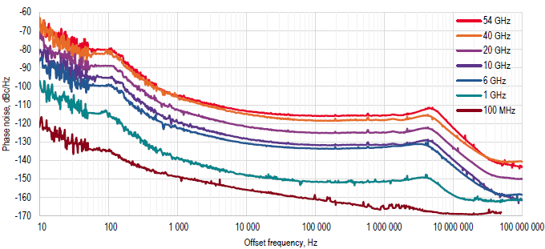
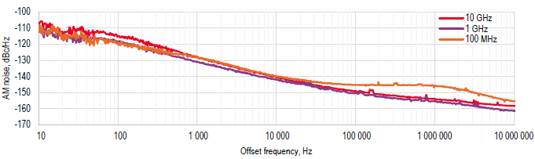
The plots above show phase noise across carrier frequency for the LN1 and LN2 reference options, and residual amplitude noise, all at +10 dBm output power.
Spectral Purity
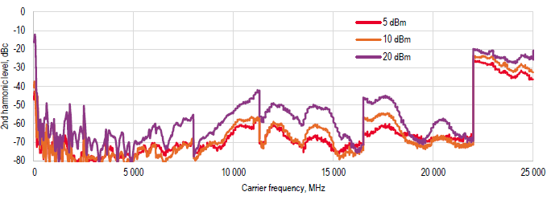
| Parameter | Min | Typical | Max | Note |
|---|---|---|---|---|
| Harmonics | At +5 dBm output power | |||
| 9 kHz to 150 MHz | -30 dBc | |||
| 150 MHz to 2 GHz | -35 dBc | -30 dBc | ||
| 2 GHz to 6 GHz | -50 dBc | -45 dBc | ||
| 6 GHz to 22 GHz | -55 dBc | -50 dBc | ||
| 22 GHz to 30 GHz | -25 dBc | -20 dBc | ||
| 30 GHz to 54 GHz | -55 dBc | -50 dBc | ||
| Sub-Harmonics | ||||
| 9 kHz to 100 MHz | -80 dBc | |||
| 100 MHz to 11.3 GHz | -70 dBc | -60 dBc | ||
| 11.3 GHz to 54 GHz | -70 dBc | -55 dBc | ||
| Non-Harmonic Spurious | 10 kHz to 0.5 GHz offset from carrier | |||
| < 1.2 GHz | -95 dBc | -85 dBc | ||
| 1.2 to 2.5 GHz | -90 dBc | -86 dBc | ||
| 2.5 to 6 GHz | -85 dBc | -80 dBc | ||
| 6 to 12 GHz | -80 dBc | -74 dBc | ||
| 12 to 20 GHz | -75 dBc | -68 dBc | ||
| 20 to 40 GHz | -70 dBc | -65 dBc | ||
| 40 to 54 GHz | -67 dBc | -62 dBc |
Phase Coherence
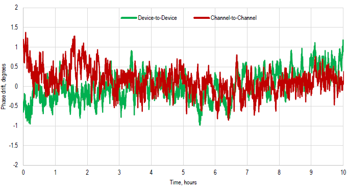
| Parameter | Min | Typical | Max | Note |
|---|---|---|---|---|
| Relative Phase Stability | Tba | See plot | ||
| Between channels | Tba | |||
| Between synchronized modules | Tba | |||
| Phase-Coherent Switching | ||||
| Phase mismatch at outputs | ||||
| Channel to Channel Performance | ||||
| Isolation, 300 kHz to 54 GHz | 80 dB | > 90 dB |
Level Performance
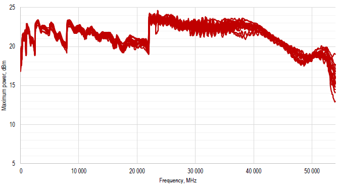
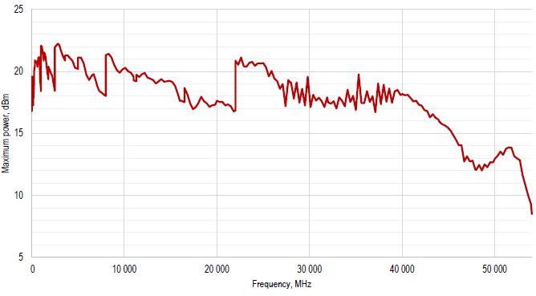
| Parameter | Min | Typical | Max | Note |
|---|---|---|---|---|
| Output Power Level | ||||
| 9 kHz to 1 MHz | -20 dBm | +7 dBm | ||
| 1 MHz to 10 MHz | -20 dBm | +12 dBm | ||
| 10 MHz to 200 MHz | -20 dBm | +17 dBm | ||
| 200 MHz to 22 GHz | -20 dBm | +19 dBm | ||
| 22 GHz to 42 GHz | -20 dBm | +20 dBm | ||
| 42 GHz to 50 GHz | -20 dBm | +15 dBm | ||
| Output Power Level | Option PE2 | |||
| 9 kHz to 1 MHz | -120 dBm | +7 dBm | ||
| 1 MHz to 10 MHz | -120 dBm | +12 dBm | ||
| 10 MHz to 200 MHz | -120 dBm | +16 dBm | ||
| 200 MHz to 22 GHz | -120 dBm | +16 dBm | ||
| 22 GHz to 42 GHz | -120 dBm | +16 dBm | ||
| 42 GHz to 50 GHz | -120 dBm | +12 dBm | ||
| Power Resolution | 0.01 dB | |||
| Reverse Power Protection | ||||
| DC Voltage | ±10 V | |||
| RF Power | 26 dBm | |||
| Output Impedance | 50 Ohms | |||
| VSWR | ||||
| 1.3 | 1.5 | < 15 GHz | ||
| 1.6 | 1.8 | 15 to 35 GHz | ||
| 1.9 | 2.2 | > 35 GHz |
Power Level Uncertainty
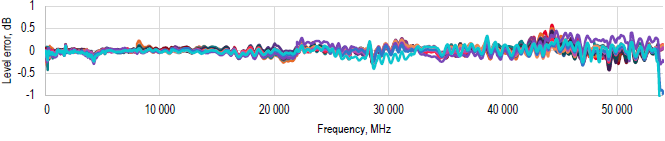
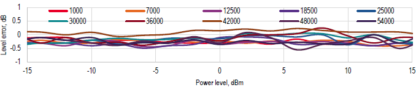
Typical values in parentheses.
| Frequency Range | -110 to -50 dBm (Option PE2) | -50 to -15 dBm (Option PE2) | -15 to +15 dBm | +15 dBm to Max Power |
|---|---|---|---|---|
| 300 kHz to 6 GHz | 2.0 dB | 1.2 dB | 0.8 dB (0.3 dB) | 1.2 dB |
| 6 to 12 GHz | 2.0 dB | 1.3 dB | 0.9 dB (0.3 dB) | 1.3 dB |
| 12 to 20 GHz | 2.0 dB | 1.8 dB | 1.0 dB (0.3 dB) | 2.0 dB |
| 20 to 26 GHz | 2.3 dB | 2.0 dB | 1.2 dB (0.4 dB) | 2.3 dB |
| 26 to 54 GHz | 2.5 dB | 2.0 dB | 1.3 dB (0.5 dB) | 2.5 dB |
Relative Power Error (0.1 dB step)
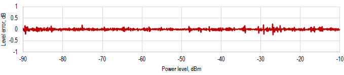
Typical values in parentheses.
| Frequency Range | -110 to -50 dBm (Option PE2) | -50 to -15 dBm (Option PE2) | -15 to +15 dBm | +15 dBm to Max Power |
|---|---|---|---|---|
| 300 kHz to 20 GHz | (< 0.1 dB) | 0.5 dB (< 0.1 dB) | 0.5 dB (< 0.1 dB) | (< 0.1 dB) |
| 20 GHz to 26 GHz | (< 0.1 dB) | (< 0.1 dB) | (< 0.1 dB) | (< 0.1 dB) |
| 26 GHz to 54 GHz | (< 0.1 dB) | (< 0.1 dB) | (< 0.1 dB) | (< 0.1 dB) |
Modulation Capabilities
Pulse Modulation
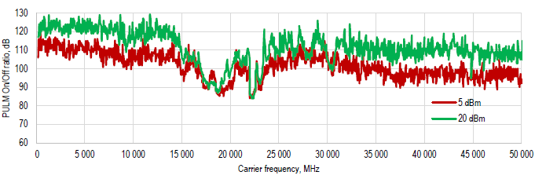
| Parameter | Min | Typical | Max | Note |
|---|---|---|---|---|
| Modulation Source | Internal / External | |||
| External input amplitude | TTL | |||
| Pulse rise/fall time | 3 ns | 5 ns | ||
| On/off ratio (power >=+10 dBm) | 100 dB | 80 dB | ||
| Pulse overshoot | 10% | |||
| Pulse delay | 20 ns | |||
| Pulse polarity | Normal, inverse | Selectable | ||
| Internal pulse generator | ||||
| Repetition frequency (PRF) | 0.1 Hz | 50 MHz | = 1/T | |
| Duty cycle | 1 % to 99 % in 1% steps | Within specified minimum pulse width | ||
| Pulse pattern modulation & staggered PRF | Using internal pattern generator | |||
| Pulse width | 100 ns · 10 ns | 20 s | f < 125 MHz · f >= 125 MHz | |
| Programmable pattern length | 2 | 65536 | ||
| Duty cycle | 0.05% | 99.95% | ||
| Pulse width resolution | 5 ns | |||
| Pulse period (T) accuracy | 0.00005xT + 3 ns | |||
| Pulse width accuracy | 0.00005xT + 5 ns | |||
| Pulse jitter | 2 ns | 5 ns | ||
| Polarity | selectable |
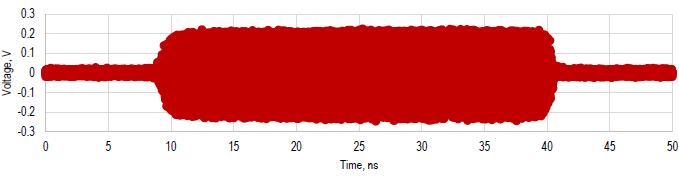
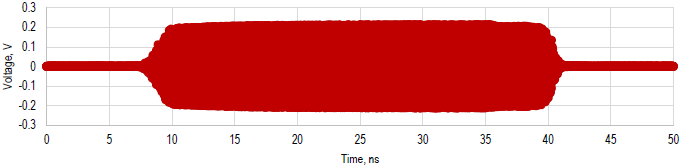
The traces above show the measured pulse on/off ratio across carrier frequency at 5 and 20 dBm, and pulse-modulated output at 10 GHz and 50 GHz.
Amplitude Modulation
| Parameter | Min | Typical | Max | Note |
|---|---|---|---|---|
| Amplitude Modulation | — | Option MOD | ||
| Modulation Source | Internal | |||
| Modulation Depth | 0% | — | ||
| Deviation Accuracy | 2% | — | 1 kHz rate, 30% depth | |
| Deviation Resolution | 1% | |||
| Distortion (THD) | — | 1 kHz rate, 30% depth | ||
| Modulation rate | 0.1 Hz | — | ||
| Modulation Waveforms | Sine |
Frequency Modulation
| Parameter | Min | Typical | Max | Note |
|---|---|---|---|---|
| Frequency Modulation | — | Option MOD | ||
| Modulation source | Internal | |||
| Maximum Frequency deviation (peak) | N · 50 MHz | |||
| Deviation accuracy | 0.50% | 2% | ||
| Distortion (THD) | < 1% | 1 kHz rate, 10 kHz deviation | ||
| Modulation rate | 0.1 Hz | 30 kHz | ||
| Modulation waveforms | Sine |
Phase Modulation
| Parameter | Min | Typical | Max | Note |
|---|---|---|---|---|
| Phase Modulation | — | Option MOD | ||
| Modulation Source | Internal | |||
| Phase deviation (peak) | 0 | 100 · N · rad | ||
| Deviation accuracy | 0.50% | 2% | ||
| Modulation rate | 0.1 Hz | 30 kHz | ||
| Modulation waveforms | Sine | |||
| Distortion (THD) | < 1% | 1 kHz rate & N x rad deviation |
Sweeping Capability
| Parameter | Min | Typical | Max | Note |
|---|---|---|---|---|
| Sweep Parameters | Frequency, power, phase, list | |||
| Sweep type | Linear, logarithmic, random | |||
| Step time (tstep = tdwell + toff) | 500 µs | 19998 s | ||
| 15 µs | Option FS | |||
| Dwell time (tdwell) | 0 µs | 9999 s | ||
| Off time (toff) | 0 µs | 9999 s | ||
| Time resolution | 5 ns | |||
| Timing delay (Tde) | 50 ns | |||
| Transient time (Tinv) | 15 µs | |||
| Timing accuracy per point | 5 ns | |||
| Number of points | 2 | 10000 | ||
Trigger (TRIG IN)
| Parameter | Min | Typical | Max | Note |
|---|---|---|---|---|
| Trigger Types | Continuous, Single (point), Gated, Gated direction | |||
| Trigger Source | External, Bus (LAN, USB) | |||
| Trigger Modes | Continuous free run, Trigger and run, Reset and run | |||
| Trigger latency | 5 ns | |||
| Trigger Uncertainty | 10 ns | |||
| External trigger delay | 50 ns | 40 s | Settable | |
| External delay resolution | 5 ns | |||
| Trigger Modulo | 1 | 255 | Execute only on Nth trigger event | |
| Trigger Polarity | Rising, Falling | |||
| External trigger input threshold | 0.85 V | 0.9 V | 0.95 V | TTL compatible |
| External trigger input voltage range | -0.5 V | +5.5 V | TTL compatible | |
| External trigger input hysteresis | 60 mV | |||
Multi-Purpose Output (FUNC OUT)
| Parameter | Min | Typical | Max | Note |
|---|---|---|---|---|
| VIDEO OUTPUT (of internal pulse modulator) | ||||
| Output | CMOS | |||
| Period | 30 ns | 50 s | ||
| Pulse width | 15 ns | 50 s | ||
| RF delay | 10 ns | |||
| TRIGGER OUT Synchronization mode for multiple sources | ||||
| Modes | Trigger on sweep start, Trigger on each point, Signal valid | |||
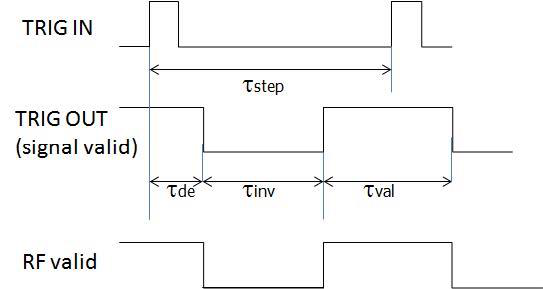
Connectors
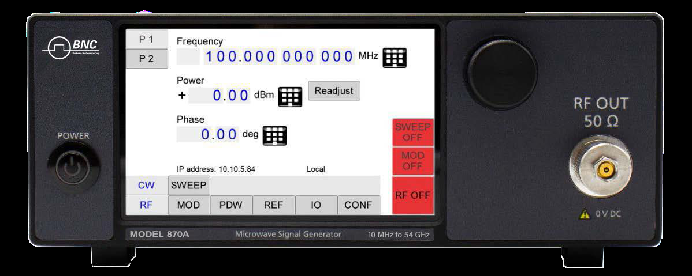
Single-Channel Front Panel (Desktop Enclosure)
- Power Switch
- Rotary knob
- RF Outputs:
- 870A-12/20: SMA female
- 870A-40: K female
- 870A-50: 1.85/2.4 mm female
Single-Channel Rear Panel (Desktop enclosure)
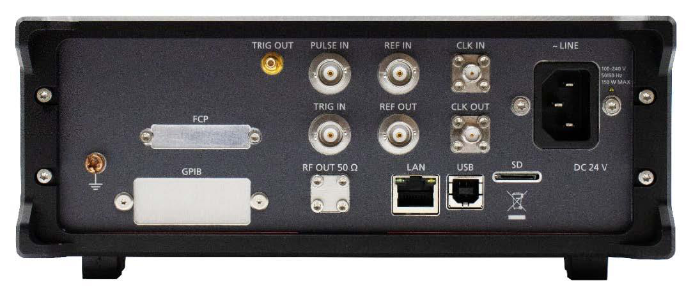
- Trigger output (TRIG OUT): BNC female
- PULSE IN: Pulse modulation input: BNC female
- Reference input (REF IN): BNC female
- High Stability Reference input (CLK IN, 6 GHz): SMA female
- Trigger input (TRIG IN): BNC female
- Reference output (REF OUT): BNC female
- High Stability Reference output (CLK OUT, 6 GHz): SMA female
- GPIB: IEEE-488.2, 1987 with listen and talk (optional)
- LAN connection: RJ-45
- USB 2.0 device
- Card slot (SD)
- 100-240V AC power plug
- Ground reference screw (earth) M4
Front panel (19” 2U)
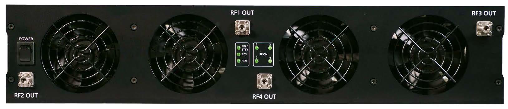
- RF outputs:
- 870A-12/20: SMA female
- 870A-40: K female
- 870A-50: 1.85/2.4 mm female
- External pulse modulation inputs: BNC female
Rear Panel (19” 2U)
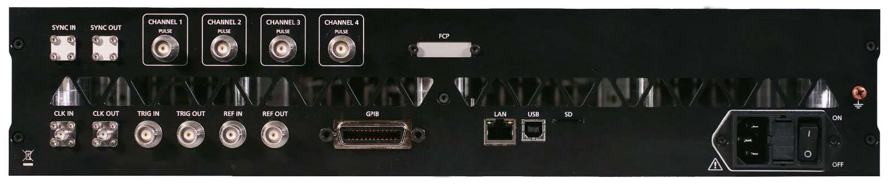
- Unit-to-unit synchronization signal input (SYNC IN): SMA female
- Unit-to-unit synchronization signal output (SYNC OUT): SMA female
- Channel 1, 2, 3, 4 PULM input: BNC female
- High Stability Reference input (CLK IN, 6 GHz): SMA female
- High Stability Reference output (CLK OUT, 6 GHz): SMA female
- Trigger input (TRIG IN): BNC female
- Trigger output (TRIG OUT): BNC female
- Reference input (REF IN): BNC female
- Reference output (REF OUT): BNC female
- GPIB: IEEE-488.2, 1987 with listen and talk (optional)
- LAN connection: RJ-45
- USB 2.0 device
- Card slot (SD)
- FUSE (3.15 A)
- 100-240V AC power plug
- Power switch
- Ground reference screw (earth) M4
Mechanical Specifications
| Form factor | Dimensions (incl. connectors) | Weight |
|---|---|---|
| Desktop enclosure | W x L x H = 9.1 x 15.5 x 3.8 in [232 x 393 x 96.75 mm] | ≤22 lbs [10 kg] |
| 19” 2U | W x L x H = 17.5 x 23.4 x 3.5 in [444 x 594 x 88 mm] | 39.7 lbs [18 kg] |
Desktop enclosure: Dimensions & Weight
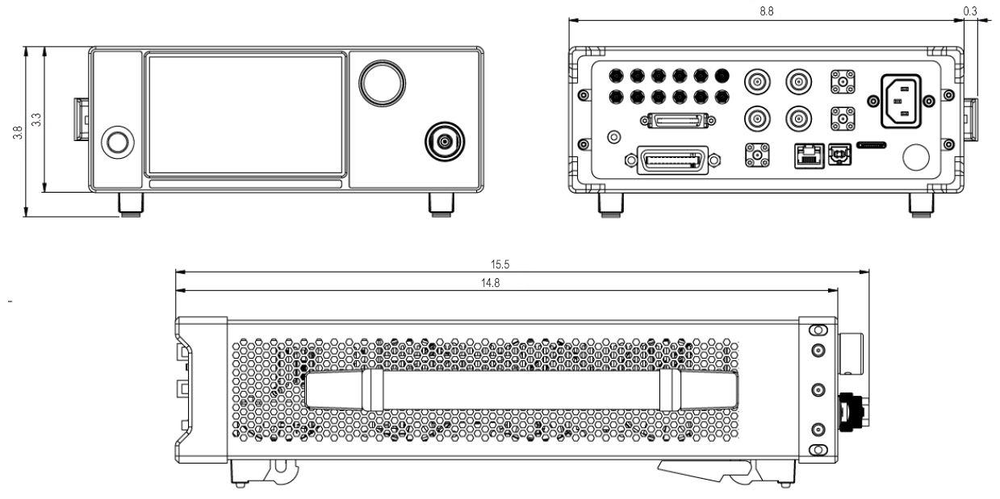
19” 2U: Dimensions & Weight
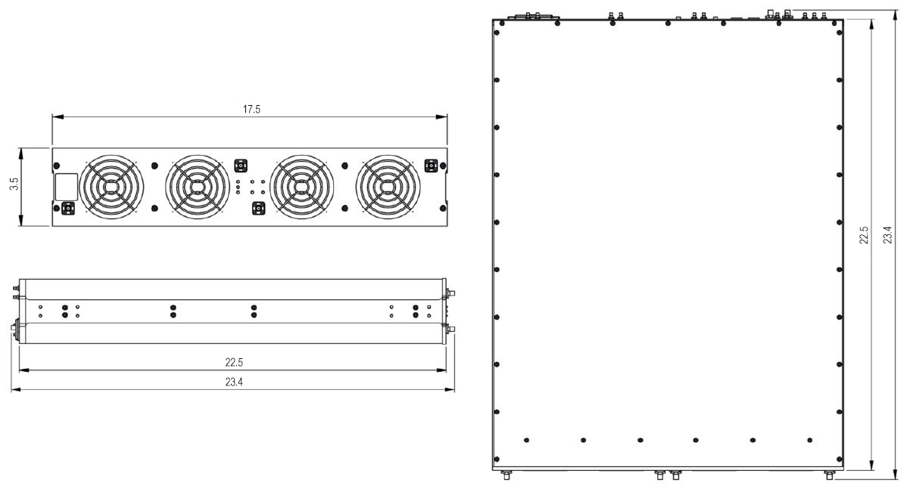
Ordering Information
| Host Model No. | Product | Description |
|---|---|---|
| 870A | 870A-12 | High Performance Signal Generator up to 12.75 GHz |
| 870A | 870A-20 | High Performance Signal Generator up to 20 GHz |
| 870A | 870A-40 | High Performance Signal Generator up to 40 GHz |
| 870A | 870A-50 | High Performance Signal Generator up to 54 GHz |
| 870A-XX | 870A-12-1 | 1 channel Signal Generator, up to 12.75 GHz, 19" 2HU rack-mount module |
| 870A-XX | 870A-12-2 | 2 channel Signal Generator, up to 12.75 GHz, 19" 2HU rack-mount module |
| 870A-XX | 870A-12-3 | 3 channel Signal Generator, up to 12.75 GHz, 19" 2HU rack-mount module |
| 870A-XX | 870A-12-4 | 4 channel Signal Generator, up to 12.75 GHz, 19" 2HU rack-mount module |
| 870A-XX | 870A-20-1 | 1 channel Signal Generator, up to 20 GHz, 19" 2HU rack-mount module |
| 870A-XX | 870A-20-2 | 2 channel Signal Generator, up to 20 GHz, 19" 2HU rack-mount module |
| 870A-XX | 870A-20-3 | 3 channel Signal Generator, up to 20 GHz, 19" 2HU rack-mount module |
| 870A-XX | 870A-20-4 | 4 channel Signal Generator, up to 20 GHz, 19" 2HU rack-mount module |
| 870A-XX | 870A-40-1 | 1 channel Signal Generator, up to 40 GHz, 19" 2HU rack-mount module |
| 870A-XX | 870A-40-2 | 2 channel Signal Generator, up to 40 GHz, 19" 2HU rack-mount module |
| 870A-XX | 870A-40-3 | 3 channel Signal Generator, up to 40 GHz, 19" 2HU rack-mount module |
| 870A-XX | 870A-40-4 | 4 channel Signal Generator, up to 40 GHz, 19" 2HU rack-mount module |
| 870A-XX | 870A-50-1 | 1 channel Signal Generator, up to 54 GHz, 19" 2HU rack-mount module |
| 870A-XX | 870A-50-2 | 2 channel Signal Generator, up to 54 GHz, 19" 2HU rack-mount module |
| 870A-XX | 870A-50-3 | 3 channel Signal Generator, up to 54 GHz, 19" 2HU rack-mount module |
| 870A-XX | 870A-50-4 | 4 channel Signal Generator, up to 54 GHz, 19" 2HU rack-mount module |
| 870A-XX | Option FS | Ultra-fast switching speed |
| 870A-XX | Option 9K | Frequency range extension to 9 kHz |
| 870A-XX | Option LN | Enhanced close in phase noise and frequency stability |
| 870A-XX | Option LN+ | Option LN with improved long term frequency stability |
| 870A-XX | Option MOD | Analog modulations added |
| 870A-XX | Option PE2-20/40 | Mechanical step attenuator down to -120 dBm |
| 870A-XX | Option PE2-50 | Mechanical step attenuator down to -110 dBm |
| 870A-XX | Option PHS | Phase coherent switching |
| 870A-XX | Option VREF | Flexible external reference frequency support in range 1 to 250 MHz |
| 870A-XX | Option FLASH | MicroSD card slot for removable SD memory |
| 870A-XX | Option GPIB | GPIB interface |
General Characteristics
Remote programming interfaces
- 1 Gbit Ethernet interface
- USB 2.0 device
- GPIB (IEEE-488.2, 1987) with listen and talk (Option GPIB)
Power requirements: 100 – 240 VAC, 50 or 60 Hz, 200W maximum (80W + 30W per channel)
Environmental: levels similar to MIL-PRF-28800F Class 3 & 4
Safety / EMC: comply with applicable Safety and EMC regulations and directives.
Weight: ≤ 2.2 lbs (14.0 kg) net (verify: lb/kg figures inconsistent in source; Mechanical Specifications lists 10–18 kg)
Dimensions: 19'' 2U HI enclosure: 3.5 in H x 17.3 in W x 19.7 in L (88 mm H x 440 mm W x 500 mm L) (verify: differs from Mechanical Specifications 17.5 x 23.4 x 3.5 in)
Cited in peer-reviewed research
Independent publications citing this instrument, indexed by Bioz. Citation counts and Bioz Stars ratings are shown live and update as new papers are indexed.